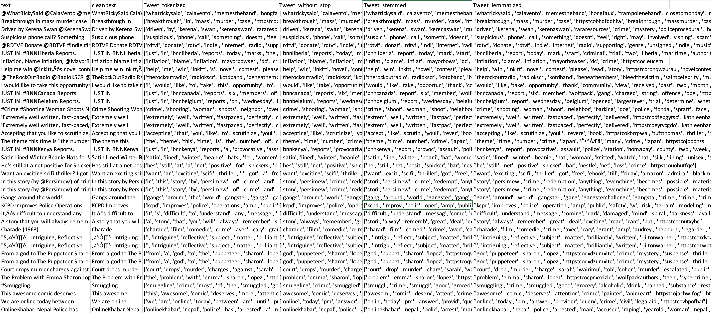
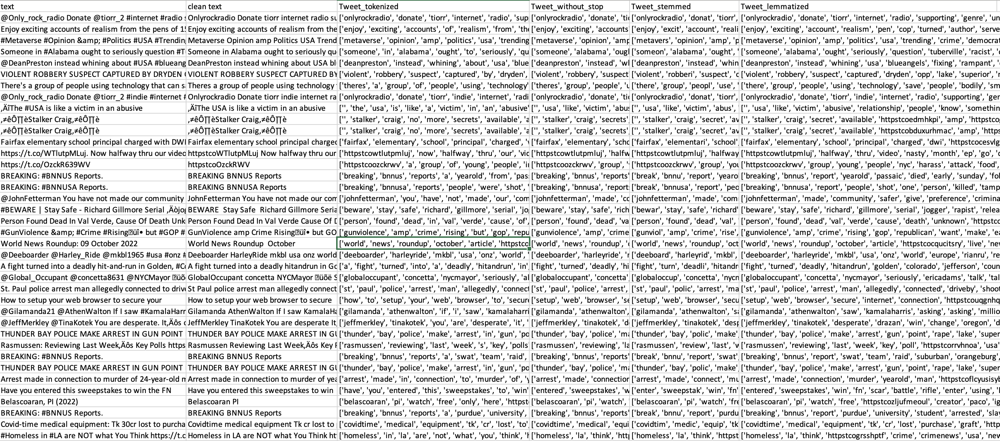
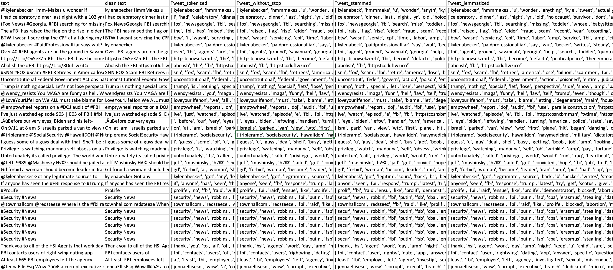
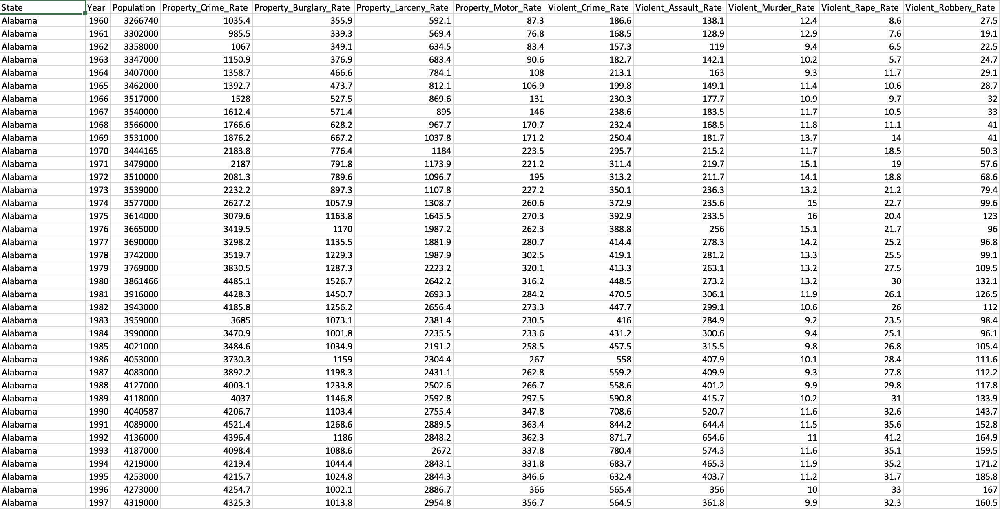
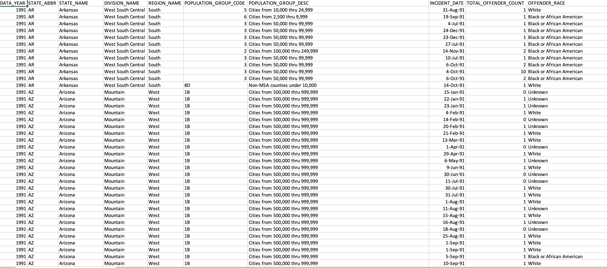

- About Me
- Code
- Data
- Introduction
- Data Gathering
- Data Cleaning
- Exploring Data
- Naive Bayes
- Decision Trees
- SVM
- Clustering
- ARM and Networking
- Conclusion
DATA CLEANING
Data cleaning is the process of deleting inaccurate, duplicate, or otherwise erroneous data from a dataset. These errors might include poorly structured data, duplicate entries, mislabeled data, and other difficulties; they frequently occur when two or more datasets are joined. Data cleansing enhances the quality of your data and any business decisions you make based on it.
There is no one correct approach to clean a dataset because each set is unique and contains its own collection of flaws that must be fixed. Many data cleaning processes can now be automated using specialist software, however some work must still be done manually to achieve maximum accuracy. This task is typically performed by data quality analysts, BI analysts, and business users.
Data Cleaning vs. Data Cleansing vs. Data Scrubbing
In the majority of instances, these names are interchangeable and refer to the same item. Data scrubbing may be used to refer to a particular component of data cleansing, specifically the elimination of redundant or inaccurate data from datasets. You should also be aware that data scrubbing might have a slightly different meaning within the context of data storage; in this case, it refers to an automated function that reviews storage systems and disk drives to identify and confirm the readability of any faulty sectors or blocks. Note that all three terms data cleaning, data cleansing, and data scrubbing are distinct from data transformation, which is the process of turning clean data to a new format or structure. Data transformation is a distinct procedure that follows data cleansing.
The majority of data cleansing steps adhere to a consistent framework:
● Choose the relevant data values for your analysis.
● Collect the information you require, then sort and organize
● Identify and remove duplicate or irrelevant values.
● Look for missing values and fill them in to get a complete dataset.
● Fix any structural or repetitive errors left in the dataset.
● Identify outliers and eliminate them so that they do not impede your analysis.
● Validate your dataset to guarantee that it is suitable for data transformation and analysis.
TEXT DATA CLEANING:
● Twitter databases contain more information, including retweet, hashtag, username, and altered tweets. This is entirely disregarded and eliminated from the dataset.
● Generally, stop words are regarded as a "one group of words." We do not want these terms to use database storage space. This is accomplished using NLTK and a "Stop Word Dictionary." The stop words are eliminated since they serve no purpose.
● According to the priorities, it is necessary to address all punctuation marks. For instance, ".", "!","[","?" are essential punctuation marks that should be maintained, while others should be eliminated.
● In the text datasets, additional information such as retweet, hashtag, username, and modified tweets are also included. This is all disregarded and removed from the dataset.
● The duplicates are removed from the datasets. Occasionally, it is desirable to eliminate duplicate data using a collection of unique identifiers. For instance, the likelihood of two purchases occurring simultaneously with the identical square footage, price, and construction year is practically negligible.
RECORD DATA CLEANING:
After data is gathered, unnecessary columns are detected and eliminated. If two datasets include the same columns, they are combined.If null values are detected in the data, they are replaced with the column's mean. Some null values that contribute nothing to the data are eliminated. Checked for outliers and removed them to cleanse the data.
| Snippet of Clean Dataset | Description |
|---|---|
| 
|
|
| 
|
|
| 
|
|
| 
|
|

|
|

|
|
| 
|
|